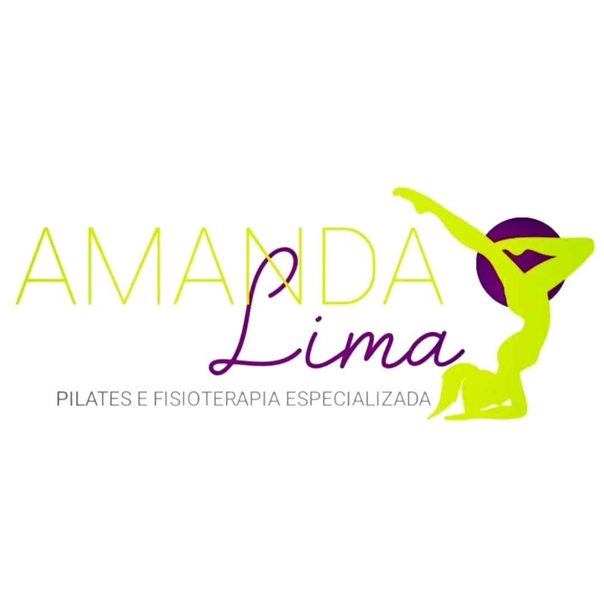
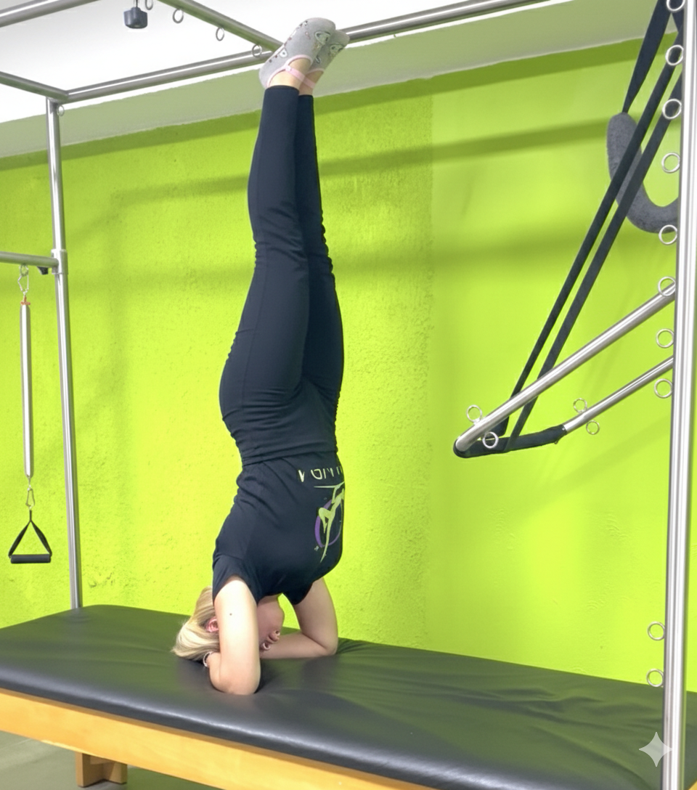
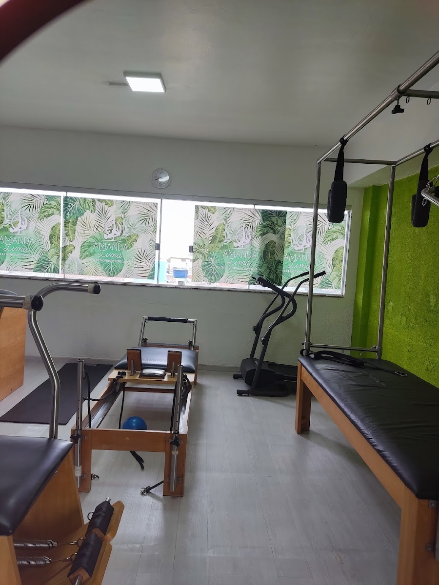

Pilates em Aparelhos
Exercícios guiados no Reformer, Cadillac e Chair para fortalecimento e alinhamento postural.


Fisio Essence Pilates: fisioterapia especializada, pilates em aparelhos e reabilitação postural com nota 5.0 e atendimento humanizado em Ceilândia.
A Fisio Essence une o método Pilates à fisioterapia preventiva e curativa, proporcionando alívio de dores na coluna, fortalecimento muscular e flexibilidade.


Exercícios guiados no Reformer, Cadillac e Chair para fortalecimento e alinhamento postural.
Tratamento para Hérnia de disco, lombalgia, cervicalgia e dores articulares.
Exercícios terapêuticos e mobilidade para recuperação física e pós-operatória.
Primeira aula com avaliação postural inclusa.
📍 St. M QNM 18 D, Lote 02, Sala 201 - Ceilândia, Brasília - DF